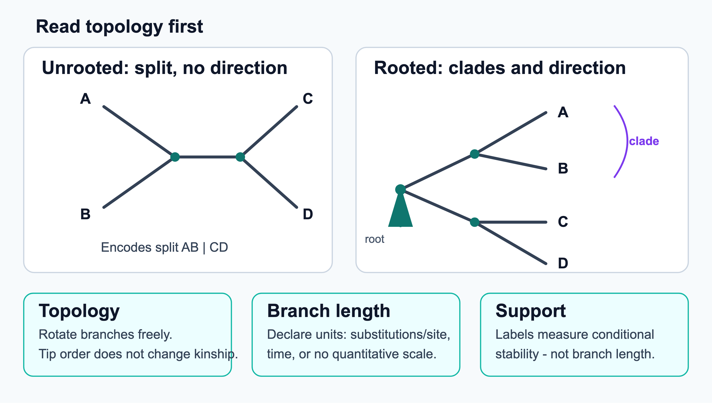
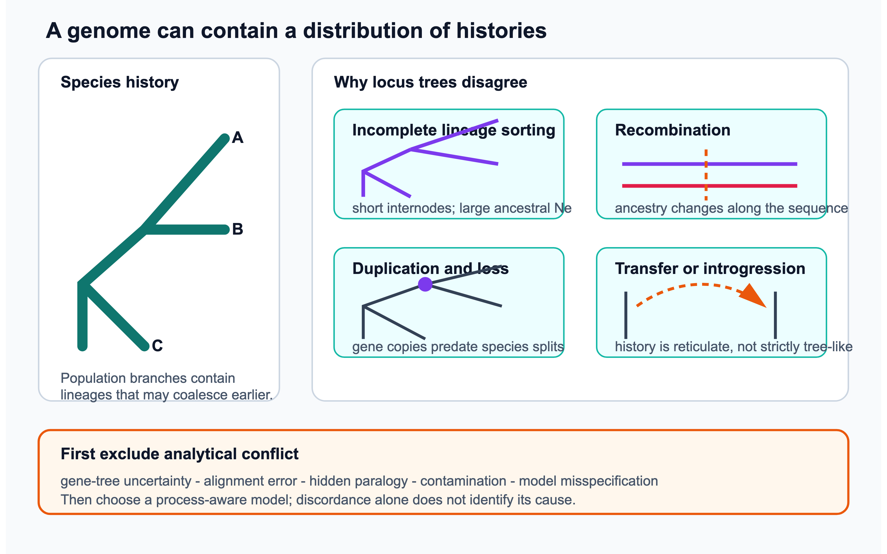

4 Phylogeny
Advantages and limitations of different methods.
4.1 Overview
Phylogenetics reconstructs the evolutionary history of genes and species from their sequences. It is one of the oldest areas of bioinformatics, and many of its ideas, such as dynamic programming on trees, explicit probabilistic models of sequence change, the bootstrap and Markov chain Monte Carlo, have spread to the rest of the field. The problem is both computational, because the number of possible trees is astronomically large, and statistical, because the data are noisy and the models approximate. This chapter covers
- the history of the field and the vocabulary of trees: rooting, clades, the number of possible trees and gene trees versus species trees (Section 4.2);
- the main families of methods: distance methods, parsimony, maximum likelihood and Bayesian inference (Section 4.3), the substitution models they depend on, the choice between nucleotide, codon and protein data, and tests of the molecular clock (Section 4.3.6), and measures of support (Section 4.3.9);
- alignment uncertainty, phylogenomics, gene trees versus species trees, consensus trees and concordance factors, reconciliation, phylogenomic function prediction and phylogenetic networks (Section 4.4);
- what has been learned about the tree of life, its root and the origin of eukaryotes; how taxonomy relates to phylogeny; and the evolution of humans and the other great apes (Section 4.5).
The evolutionary processes that trees describe are covered in Chapter 3, and the use of trees to infer orthology in Section 3.5.
4.2 Basic definitions
A phylogenetic tree is a hypothesis about how a set of sequences or species descend from common ancestors. Trees are used to classify organisms, infer orthology (Section 3.5), date divergences, reconstruct ancestral sequences, detect selection (Section 3.4) and track the spread of pathogens. This section introduces the history of the field and the vocabulary used for trees. The methods for building them follow in Section 4.3.
4.2.1 From morphology to molecules
Darwin’s only figure in the Origin of Species (1859) was a branching tree, and Ernst Haeckel drew elaborate “trees of life” in the 1860s, but these were based on anatomy and intuition. Two developments in the 1950s and 1960s turned phylogeny into a quantitative science.
The first was cladistics. Willi Hennig argued that classification should reflect phylogeny only, and that groups should be clades, an ancestor and all its descendants (Hennig 1965). Clades are recognised by shared derived characters (synapomorphies), not by shared ancestral characters. Having a backbone, for example, does not show that fish form a group, because the backbone was inherited from the common ancestor of all vertebrates, including us. Hennig’s ideas led to the first algorithmic methods, which searched for the tree that needed the fewest character changes (parsimony, Section 4.3).
The second was the arrival of molecular data. Zuckerkandl and Pauling described molecules as “documents of evolutionary history”, and noticed that proteins seemed to change at a roughly constant rate, the molecular clock (Section 3.3). In 1967 Fitch and Margoliash built one of the first trees from protein sequences, using cytochrome c from 20 species and a distance method (Fitch and Margoliash 1967). In the same years Cavalli-Sforza and Edwards introduced maximum likelihood and Jukes and Cantor the first probabilistic model of sequence change (Jukes and Cantor 1969). Joseph Felsenstein showed in 1978 that parsimony can be misleading (Felsenstein 1978) and in 1981 made maximum likelihood practical for DNA sequences (Felsenstein 1981). Neighbour joining followed in 1987 (Saitou and Nei 1987) and Bayesian methods in the 1990s (Rannala and Yang 1996; Huelsenbeck et al. 2001). Felsenstein’s book tells the history of these methods and of the debates between their proponents (Felsenstein 2004).
4.2.2 Tree terminology
A tree consists of nodes connected by branches (edges).
- The leaves (tips, terminal nodes) are the observed sequences or species, often called taxa or operational taxonomic units (OTUs).
- The internal nodes represent hypothetical ancestors. In a fully resolved (bifurcating) tree each internal node has two descendants. A node with more descendants is a polytomy. It can represent a genuine rapid radiation (a hard polytomy) or, more often, lack of resolution (a soft polytomy).
- The topology is the branching pattern alone. Branch lengths usually give the expected number of substitutions per site along the branch, that is, the amount of change, which is the product of time and rate. A branch length is therefore not a time, unless the tree has been dated with a clock model (a chronogram). In a time tree the branch lengths are proportional to time and the tree is ultrametric: all leaves are equally far from the root. In a cladogram only the topology is shown, and the branch lengths mean nothing.
- A clade (monophyletic group) is an ancestor and all its descendants. A paraphyletic group contains an ancestor and only some of its descendants (reptiles without birds, prokaryotes without eukaryotes). A polyphyletic group is defined by a character that evolved independently, without including the common ancestor (warm-blooded animals). Cladistic classification accepts only monophyletic groups. Clades are defined only on a rooted tree. An unrooted tree defines splits (bipartitions of the leaves), which become clades once a root is chosen.
- Sister groups are two clades that are each other’s closest relatives: they descend from the same immediate ancestral node. The outgroup is a taxon known to lie outside the group of interest (the ingroup).

Rooted and unrooted trees
A rooted tree has a node, the root, that represents the most recent common ancestor of all leaves, and so gives every branch a direction in time. An unrooted tree shows only the relationships between the leaves. Most reconstruction methods produce unrooted trees, because the substitution models they use are time-reversible: the likelihood is the same wherever the root is placed. A tree is rooted afterwards, usually by
- outgroup rooting: including a more distant taxon and placing the root on the branch that leads to it. This is the most reliable method, but it requires prior knowledge that the outgroup really lies outside the ingroup, and a distant outgroup can itself be attracted to long branches (Section 4.3);
- midpoint rooting: placing the root halfway along the longest path between two leaves. It needs no outgroup but assumes a roughly constant rate, and it misplaces the root when some lineages evolve faster than others;
- a molecular clock model, or non-reversible models, which put the root where the clock or the model fits best. These use information in the ingroup alone, but the rooting signal is often weak, so the root position is uncertain.
The root of the whole tree of life cannot be found with an outgroup, because no outgroup exists. How it has been approached is described in Section 4.5.
The number of possible trees
The main computational problem in phylogenetics is that the number of trees grows super-exponentially with the number of taxa. An unrooted bifurcating tree with \(n\) leaves has \(2n-3\) branches. A new leaf can be attached to any of them, so the number of unrooted trees is
\[ U(n) = \prod_{i=3}^{n} (2i-5) = (2n-5)!! = \frac{(2n-5)!}{2^{n-3}(n-3)!}, \]
and the number of rooted trees is \(R(n) = U(n+1) = (2n-3)!!\), because a rooted tree with \(n\) leaves corresponds to an unrooted tree with an extra leaf attached at the root. There are three unrooted trees for four taxa, 15 for five, about \(2 \times 10^{6}\) for 10 and more than \(2 \times 10^{20}\) for 20. For 50 taxa the number exceeds \(10^{74}\). Finding the best tree under the parsimony or likelihood criterion is NP-hard, so every practical method combines a criterion for scoring trees with a heuristic for searching among them (Yang and Rannala 2012; Kapli et al. 2020).
Writing trees down
Trees are stored as text in the Newick format, in which each clade is written within parentheses and branch lengths follow a colon. For example, ((human:0.006,chimp:0.007):0.002,gorilla:0.009,orangutan:0.018); describes an unrooted tree of four apes: the basal trifurcation shows that no root is implied. The format was agreed informally in 1986 by a group of program authors and named after Newick’s seafood restaurant in Dover, New Hampshire, where they met. Richer formats such as NEXUS (used by PAUP* and MrBayes) and the XML-based PhyloXML and NeXML can store data and annotations together with the tree.
4.2.3 Gene trees and species trees
A tree built from one gene is a gene tree. It describes the history of that gene, which need not be the history of the species that carry it, the species tree (Maddison 1997). The distinction runs through the rest of the chapter: the methods in Section 4.3 estimate gene trees (or a single tree for concatenated genes), and the processes that make gene trees and species trees differ are discussed in Section 4.4.
See also: further explanation in Section D.4.1; related Wikipedia articles in Section E.4.1.
Parts of this section are adapted from the Wikipedia articles Phylogenetic tree, Cladistics, Monophyly, Phylogenetics and Newick format (CC BY-SA 4.0, retrieved 3 October 2026). Parts of this section are adapted from Matteo Tadiello, Modern Bioinformatics: From Foundations to Frontiers, chapter “Phylogenetic Inference” (CC BY 4.0), used with permission.
4.3 Phylogenetic methods
Every published tree is the output of a particular method, and it inherits that method’s assumptions and blind spots. Tree-building methods differ in two ways: whether they work on pairwise distances or directly on the alignment columns (characters), and whether they use an explicit statistical model of sequence evolution. The four main families are distance methods, maximum parsimony, maximum likelihood and Bayesian inference (Yang and Rannala 2012; Kapli et al. 2020). All of them start from a multiple sequence alignment (Section 1.6), and all of them assume that the alignment is correct and that sites evolve independently. The models the statistical methods depend on are described in Section 4.3.6, and measures of support in Section 4.3.9.
4.3.1 Distance methods
Distance methods first compute an \(n \times n\) matrix of pairwise evolutionary distances and then build the tree that best fits the matrix. The observed proportion of differing sites, the p-distance, underestimates the true number of substitutions, because a site can change more than once (multiple hits, back mutations). It is therefore corrected with a substitution model. Under the Jukes–Cantor model (Jukes and Cantor 1969), for example,
\[ d = -\frac{3}{4}\ln\left(1 - \frac{4}{3}p\right), \]
which equals \(p\) for small \(p\) and goes to infinity as \(p\) approaches the saturation level of \(3/4\). For proteins, distances are corrected with amino acid replacement matrices (Section 4.3.6). Because of saturation, distances between very divergent sequences have large errors.
UPGMA (unweighted pair group method with arithmetic mean) is the simplest clustering method, introduced by Sokal and Michener in 1958 for numerical taxonomy (Sokal and Michener 1958). It repeatedly joins the two closest clusters and defines the distance from the new cluster to every other as the average of the distances of its members. UPGMA always produces a rooted, ultrametric tree. It is correct only if the distances are themselves ultrametric, that is, if the sequences evolved approximately under a molecular clock. When lineages evolve at different rates, a fast-evolving taxon looks far from its true sister and is joined in the wrong place. For this reason it is rarely used for phylogenies today, although the same algorithm is used for guide trees in multiple alignment and for clustering in general.
Neighbour joining (NJ), introduced by Saitou and Nei (Saitou and Nei 1987), is based on a different principle and does not assume a clock. It requires only that the distances are additive (the distance between two leaves is the sum of the branch lengths on the path between them), so the two lineages that descend from a node may have changed by different amounts. At each step it does not join the closest pair, but the pair whose joining gives the shortest total tree length. This pair is found with a corrected matrix
\[ Q(i,j) = (r-2)\,d(i,j) - \sum_{k} d(i,k) - \sum_{k} d(j,k), \]
where \(r\) is the number of clusters left. Subtracting the total distance of each taxon from all others compensates for long branches: a taxon that is far from everything is not penalised for being on a long branch. The pair with the lowest \(Q\) is joined, the branch lengths from the new node to the two taxa are estimated, the distances from the new node to all other taxa are computed, and the procedure is repeated until three nodes remain (Studier and Keppler 1988). NJ produces an unrooted tree in \(O(n^3)\) time, which must be rooted by one of the methods in Section 4.2. If the distances are additive (fit a tree exactly), NJ recovers that tree. It was later shown to be a greedy algorithm for the balanced minimum-evolution criterion (Gascuel 2006).
Minimum evolution chooses the tree with the smallest sum of branch lengths, with branch lengths fitted to the distances by least squares. FastME searches tree space under this criterion and is both fast and accurate (Desper and Gascuel 2002). The older Fitch–Margoliash method instead minimises the weighted squared differences between the observed distances and the distances along the tree (Fitch and Margoliash 1967).
Distance methods are fast and are still used for very large data sets, for starting trees in likelihood searches, and for guide trees. Their weakness is that reducing an alignment to pairwise distances discards information: which sites changed, and how changes are shared among several taxa.
4.3.2 Maximum parsimony
Maximum parsimony chooses the tree that explains the data with the fewest character changes, following Hennig’s principle that shared derived characters indicate common descent. For a given tree, the minimum number of changes at a site is found with Fitch’s algorithm (Fitch 1971), a dynamic programme over the tree. Going from the leaves to the root, each internal node is given a set of states: the intersection of the sets of its two children if it is non-empty, and otherwise their union, at the cost of one change. The number of unions, summed over all sites, is the parsimony score of the tree. Sankoff’s algorithm generalises this to weighted changes, for example to make transitions cheaper than transversions (Sankoff 1975). Only parsimony-informative sites, where at least two states each occur in at least two taxa, can distinguish between trees.
Scoring a tree is fast, but finding the best tree still requires a search over tree space. Exact branch-and-bound searches (Hendy and Penny 1982) are possible for about 20 taxa (citation needed); larger data sets need the heuristics described below. Parsimony was the dominant method from the 1970s to the 1990s, and PAUP* and TNT were the main programs.
Parsimony has no explicit model of evolution and gives no branch lengths in units of substitutions per site. Its main problem is that it is not statistically consistent in all conditions. Felsenstein showed that when two non-sister taxa have long branches and the others short ones, parallel changes on the long branches are more frequent than the true shared changes on the short internal branch (Felsenstein 1978). Parsimony then groups the long branches together, and more data only make it more confident in the wrong tree. This region of parameter space is called the Felsenstein zone, and the artefact long-branch attraction (LBA). LBA affects all methods when the model is wrong, but model-based methods largely correct for it by accounting for multiple hits. A classic example is the early placement of fast-evolving microsporidian parasites at the base of the eukaryotic tree (Vossbrinck et al. 1987); they were later shown to be related to fungi (Hirt et al. 1999).
4.3.3 Maximum likelihood
Maximum likelihood (ML) evaluates each tree by the probability of the observed alignment given the tree \(T\), its branch lengths and an explicit substitution model \(\theta\) (Section 4.3.6):
\[ L(T, \theta) = P(D \mid T, \theta) = \prod_{s=1}^{m} P(D_s \mid T, \theta), \]
where the product is over the \(m\) alignment columns \(D_s\), assumed to evolve independently. The likelihood of one column is a sum over all possible states at the internal nodes, a number that grows exponentially with the number of taxa. Felsenstein’s pruning algorithm (Felsenstein 1981) computes it efficiently by dynamic programming, in the same way as the forward algorithm of a hidden Markov model (Section 1.6). Let \(L_k(x)\) be the probability of the data below node \(k\), given that node \(k\) has state \(x\). For a leaf, \(L_k(x)\) is 1 for the observed state and 0 otherwise. For an internal node with children \(i\) and \(j\) at branch lengths \(t_i\) and \(t_j\),
\[ L_k(x) = \Big[\sum_{y} P_{xy}(t_i)\, L_i(y)\Big] \Big[\sum_{z} P_{xz}(t_j)\, L_j(z)\Big], \]
where \(P_{xy}(t)\) is the probability that state \(x\) changes into \(y\) along a branch of length \(t\). At the root, \(P(D_s) = \sum_x \pi_x L_{\text{root}}(x)\), with \(\pi_x\) the equilibrium frequencies. The cost is linear in the number of taxa and sites and quadratic in the number of states (4 for DNA, 20 for proteins, 61 for codons). To avoid numerical underflow, the log-likelihoods of the sites are summed, and the partial likelihoods are rescaled during the recursion.
For a fixed topology, the branch lengths and model parameters are optimised numerically. The topology is then improved by a heuristic tree search that starts from an initial tree (often from neighbour joining or parsimony) and applies rearrangements:
- NNI (nearest-neighbour interchange) swaps subtrees across an internal branch, giving \(2(n-3)\) neighbours;
- SPR (subtree pruning and regrafting) removes a subtree and reattaches it to any other branch;
- TBR (tree bisection and reconnection) cuts the tree in two and reconnects the parts in all possible ways.
Larger rearrangements explore tree space more widely but are slower. Since the search can get stuck in local optima, programs use several starting trees, random perturbations and stochastic search. The most widely used programs are RAxML (Stamatakis 2014) and its successor RAxML-NG (Kozlov et al. 2019), IQ-TREE (Minh, Schmidt, et al. 2020), which combines fast hill climbing with stochastic perturbations and integrates model selection and fast bootstrap, PhyML (Guindon et al. 2010), and FastTree, which gives approximate ML trees for alignments of up to millions of sequences (Price et al. 2010).
Maximum likelihood is statistically consistent when the model is correct. It uses all the information in the alignment and allows hypotheses to be tested with likelihood-ratio tests. Its disadvantages are its computational cost and its dependence on the model: a poorly fitting model can give a confidently wrong tree.
4.3.4 Bayesian inference
Bayesian inference uses the same likelihood but combines it with prior distributions on trees, branch lengths and model parameters, to give the posterior probability of each tree:
\[ P(T, \theta \mid D) = \frac{P(D \mid T, \theta)\,P(T, \theta)}{P(D)}. \]
The denominator, a sum over all trees and an integral over all parameters, cannot be computed. Instead, trees are sampled from the posterior with Markov chain Monte Carlo (MCMC). The chain proposes a small change, for example a new branch length or a rearrangement of the topology, and accepts it with a probability given by the Metropolis–Hastings rule. This depends only on the ratio of the posterior densities of the new and old states (corrected for asymmetric proposals), so \(P(D)\) cancels. After a burn-in period the chain visits trees in proportion to their posterior probability, so the posterior probability of a clade is simply the fraction of sampled trees that contain it (Rannala and Yang 1996; Huelsenbeck et al. 2001).
The main program for general phylogenetics is MrBayes (Ronquist et al. 2012). BEAST and BEAST 2 (Suchard et al. 2018; Bouckaert et al. 2019) specialise in time-calibrated trees: they combine relaxed molecular clocks, in which the rate may vary between branches (Drummond et al. 2006), fossil or sampling-date calibrations, and population models such as the coalescent. BEAST has become the standard tool for phylodynamics, the reconstruction of the spread of epidemics such as influenza, Ebola and SARS-CoV-2 from dated virus sequences. PhyloBayes implements site-heterogeneous models such as CAT (Lartillot and Philippe 2004) that are important for deep phylogenies (Section 4.4).
Bayesian methods have three main advantages. They give a direct probabilistic measure of uncertainty, they handle complex, parameter-rich models by integrating over parameters rather than optimising them, and they allow prior knowledge, such as fossil dates, to be included. The costs are the need to choose priors, which can influence the result, and the need to check that the MCMC chains have converged: several independent chains should be run and their samples compared, for example with the average standard deviation of split frequencies or with effective sample sizes.
4.3.5 Comparing the methods
Table 4.1 summarises the four families. The model-based methods are only as good as their substitution models, which are described next (Section 4.3.6).
| Method | Criterion | Model | Strengths | Weaknesses |
|---|---|---|---|---|
| UPGMA | clustering of distances | clock assumed | very fast | wrong when rates vary |
| Neighbour joining | minimum evolution (greedy) | for distance correction | fast, consistent for additive distances | information lost in distances |
| Maximum parsimony | fewest changes | none | intuitive, no model needed | long-branch attraction, inconsistent |
| Maximum likelihood | probability of the data | explicit | uses all data, consistent, testable | slow, model-dependent |
| Bayesian inference | posterior probability | explicit, with priors | uncertainty, complex models, dating | slow, priors, convergence |
See also: further explanation in Section D.4.2; related Wikipedia articles in Section E.4.2.
Parts of this section are adapted from the Wikipedia articles Computational phylogenetics, Distance matrices in phylogeny, UPGMA, Neighbor joining, Maximum parsimony, Long branch attraction, Felsenstein’s tree-pruning algorithm and Bayesian inference in phylogeny (CC BY-SA 4.0, retrieved 3 October 2026).
4.3.6 Substitution models
Distance corrections, maximum likelihood and Bayesian inference all rely on a substitution model: a description of how one nucleotide or amino acid is replaced by another over time. Almost all models used in practice are continuous-time Markov processes. They are defined by a rate matrix \(Q\), whose element \(q_{xy}\) is the instantaneous rate of change from state \(x\) to state \(y\). The probability of change along a branch of length \(t\) is then
\[ P(t) = e^{Qt}, \]
computed by diagonalising \(Q\). Branch length and rate are confounded, so \(Q\) is scaled to one expected substitution per unit time and \(t\) is then measured in substitutions per site. The models are normally assumed to be stationary (the base composition does not change over the tree), time-reversible (\(\pi_x q_{xy} = \pi_y q_{yx}\), which is why the root position does not affect the likelihood) and the same at all sites, except for the rate. The main nucleotide models form a nested series:
| Model | Base frequencies | Exchange rates | Parameters |
|---|---|---|---|
| JC69 (Jukes and Cantor 1969) | equal | all equal | 0 |
| K80 (Kimura 1980) | equal | transitions ≠ transversions | 1 |
| F81 (Felsenstein 1981) | unequal | all equal | 3 |
| HKY85 (Hasegawa et al. 1985) | unequal | transitions ≠ transversions | 4 |
| GTR (Tavaré 1986) | unequal | all six different | 8 |
Real sequences also differ in rate from site to site: some positions are invariant because of strong functional constraints, while others, such as third codon positions, change rapidly (Section 3.6). This rate heterogeneity is usually modelled with a gamma distribution of rates across sites (Yang 1994), approximated by four to eight discrete rate categories, sometimes combined with a proportion of invariable sites. The models are named by combining the parts, for example GTR+Γ or GTR+I+Γ. Ignoring rate heterogeneity makes distances too short for divergent sequences and is a common cause of long-branch attraction.
For proteins, the 190 exchange rates between amino acids are too many to estimate from a single alignment. Instead, empirical matrices are estimated from large databases of alignments, in the tradition of Dayhoff’s PAM matrices (Section 1.3): JTT (Jones et al. 1992), WAG (Whelan and Goldman 2001) and LG (Le and Gascuel 2008) are the most common. Specialised matrices exist for mitochondrial, chloroplast and viral proteins. Codon models, which describe synonymous and non-synonymous changes separately, are used to detect selection (Section 3.4).
The assumption that all sites follow the same process is clearly false. In particular, different sites in a protein accept different sets of amino acids. Site-heterogeneous mixture models, such as CAT (Lartillot and Philippe 2004) and the C10–C60 profile mixtures (Le et al. 2008), allow each site to belong to one of many classes with its own amino acid preferences. They fit real data much better and are less sensitive to long-branch attraction in deep phylogenies (Section 4.4). Other extensions allow the rate of a site to change over the tree (heterotachy), or the composition to differ between lineages (non-stationary models).
Model selection. A more complex model never has a lower maximum likelihood than a simpler model nested within it, but it pays for the better fit with more parameters. Nested models can be compared with the likelihood-ratio test. More generally, models are compared with the Akaike information criterion, \(\text{AIC} = 2k - 2\ln L\), or the Bayesian information criterion, \(\text{BIC} = k \ln m - 2\ln L\), where \(k\) is the number of free parameters and \(m\) the number of sites. ModelTest (Posada and Crandall 1998) made this routine, and ModelFinder (Kalyaanamoorthy et al. 2017), in IQ-TREE, also tests rate-heterogeneity models and different models for different partitions (for example genes or codon positions) of the alignment. In Bayesian analyses, models can be compared with Bayes factors or averaged over with reversible-jump MCMC.
Model adequacy is a separate question. Model selection only finds the best of the candidate models; it does not show that this model describes the data well, and the best of several poor models is still poor. Whether a model is adequate is tested by asking if it could have produced the observed data: data sets are simulated under the fitted model (a parametric bootstrap, or posterior predictive simulation in a Bayesian analysis) and compared with the real alignment, for example in base composition across taxa or in the amount of saturation (Brown 2014). Inadequate models are a main source of the systematic errors described in Section 4.4.
4.3.7 Nucleotides, codons or amino acids
Protein-coding genes can be analysed as nucleotides, as codons or as amino acids. The choice matters as much as the model, because it decides how quickly the data saturate and how sensitive they are to composition.
- Nucleotides give three characters per codon and record synonymous changes, so they hold the most information for closely related sequences: populations, species within a genus, or viral outbreaks. Their problem is saturation. With only four states, and with third codon positions changing rapidly, sites that have changed several times look no more different than sites that have changed once, and the similarity that remains is increasingly due to chance and to shared composition. Saturation can be seen by plotting the observed (uncorrected) distances against model-corrected distances: the curve flattens when the sequences are saturated.
- Amino acids have 20 states, ignore synonymous changes and evolve more slowly, so they saturate much later. They are the usual choice for deep divergences, from hundreds of millions of years onwards, and with site-heterogeneous mixture models for the deepest questions (Section 4.5). The price is that information is lost for close relationships.
- Codon models describe substitutions between the 61 sense codons, using the genetic code, the transition/transversion ratio and the ratio \(\omega = d_N/d_S\) of non-synonymous to synonymous rates (Goldman and Yang 1994; “A Likelihood Approach for Comparing Synonymous and Nonsynonymous Nucleotide Substitution Rates, with Application to the Chloroplast Genome.” 1994). They are the most realistic description of coding sequences, and are essential for detecting selection (Section 3.4), but they are much slower to compute and are less often used for tree search itself.
Compositional heterogeneity is the second problem. Standard models assume one base or amino acid composition for the whole tree (stationarity), but genomes differ widely in GC content, and the composition of proteins follows it partly. Unrelated lineages with similar composition, for example GC-rich thermophiles, are then pulled together. Remedies include removing or recoding third codon positions (RY-coding, in which only purines and pyrimidines are distinguished), LogDet distances, non-stationary models that allow the composition to change over the tree (Foster 2004), and recoding amino acids into a few groups of similar residues. Partitioning the data, with separate models for first, second and third codon positions, is a common compromise for nucleotide data of intermediate depth.
A simple rule follows. Use nucleotides when the sequences are close, partitioned codon positions or codon models at intermediate distances, and amino acids when third positions are saturated. Check the conclusion with more than one data type.
4.3.8 Testing the molecular clock
Many analyses, such as UPGMA trees, clock rooting and divergence dating, assume a molecular clock (Section 3.3). The assumption can be tested.
The relative rate test (Sarich and Wilson 1967; Sarich and Wilson 1973) needs only three sequences: two ingroup sequences \(A\) and \(B\), and an outgroup \(C\). Under a clock, \(A\) and \(B\) have changed equally since they diverged, so the distances \(d_{AC}\) and \(d_{BC}\) should be equal, within their sampling error. Tajima’s version counts the sites where only \(A\) or only \(B\) differs from the other two sequences, and compares the two counts with a \(\chi^2\) test (Tajima 1993). The test needs neither a full tree nor dates, only the assumption that \(C\) is an outgroup to \(A\) and \(B\).
For a whole tree, a likelihood-ratio test compares the maximum likelihood of the tree without a clock, which has \(2n - 3\) free branch lengths for \(n\) sequences, with that of the same topology constrained to be ultrametric, which has \(n - 1\) node heights. The clock model is nested in the non-clock model, so twice the difference in log-likelihood is compared with a \(\chi^2\) distribution with \(n - 2\) degrees of freedom. For time-stamped samples, such as viruses collected over several years, a regression of root-to-tip distance against sampling date shows whether there is enough clock-like signal to date the tree.
With large data sets the strict clock is almost always rejected, as the first tests showed (Langley and Fitch 1974). Rejection does not mean that dating is impossible, but that rates must be modelled: by local clocks for different parts of the tree, or by the relaxed clocks used in Bayesian dating (Section 4.3), with the dates then depending more heavily on fossil calibrations and on the clock model.
4.3.9 Statistical support
A tree estimated from a finite alignment is uncertain, and different branches are uncertain to different degrees. Several measures are used to express this, and each answers a different question.
- The nonparametric bootstrap (Felsenstein 1985) creates many pseudo-replicate alignments by sampling columns from the original alignment with replacement, builds a tree from each, and reports for each branch the percentage of replicate trees that contain it. Values above about 70% have traditionally been taken as good support. The bootstrap measures how stable a branch is when the sites are resampled, for a given alignment, model and tree-building method. It is not the probability that the branch is correct: a wrong model or alignment can give a wrong branch 100% bootstrap support. In simulations it tends to be conservative for well-supported branches. Hundreds of ML replicates are expensive, which led to faster approximations such as the ultrafast bootstrap of IQ-TREE (Hoang et al. 2017). Its values are on a different scale and are usually trusted only from about 95%, compared with about 70% for the standard bootstrap. For very large trees, where a single misplaced taxon destroys a branch in all replicates, the transfer bootstrap counts how many taxa must be moved to recover the branch (Lemoine et al. 2018).
- Approximate likelihood-ratio tests (aLRT, SH-aLRT) compare, for each internal branch, the likelihood of the best tree with that of the best alternative arrangement around that branch (Anisimova and Gascuel 2006; Guindon et al. 2010). They are fast and widely reported together with the ultrafast bootstrap.
- Posterior probabilities from Bayesian analyses are the probability that a clade is correct given the model and priors. They are easier to interpret than bootstrap values, but they tend to be high (often 1.0) for short branches with little support, especially when the model is misspecified. Bootstrap values and posterior probabilities are therefore not directly comparable.
- Topology tests compare whole trees, for example the ML tree with a tree that groups taxa as an alternative hypothesis predicts. The Kishino–Hasegawa (KH), Shimodaira–Hasegawa (SH) and approximately unbiased (AU) tests (Shimodaira 2002) use the per-site likelihoods of the trees, and ask whether the difference is larger than expected by chance.
Support values and branch lengths are different quantities that are easy to confuse on a printed tree (Figure 4.1). The branch length is drawn as the length of the branch, with a scale bar in substitutions per site. The support value is a number written next to a node or branch, and in Newick files it is stored as the label of the internal node, as in (A:0.1,B:0.2)95:0.05. A long branch can have low support and a very short branch high support.
All of these measures assess random error, which decreases as more data are added. None of them protects against systematic error from a wrong model or a wrong alignment, which in phylogenomics can give 100% support for an incorrect tree (Section 4.4).
Parts of this section are adapted from the Wikipedia articles Models of DNA evolution, Substitution model, Model selection and Bootstrapping (statistics) (CC BY-SA 4.0, retrieved 3 October 2026). The subsections on data types and on testing the molecular clock were written for this book from the primary literature cited in the text.
4.4 Alignments, genomes and conflicting trees
The classical methods were developed for one gene and tens of taxa. Today, trees are routinely built from hundreds or thousands of genes. With so much data, random error is no longer the main problem. Errors in the input alignments, model misspecification and genuine conflict between the histories of different genes become more important (Delsuc et al. 2005; Jeffroy et al. 2006; Philippe et al. 2011; Kapli et al. 2020). This section starts with the input alignments, then turns to genome-scale data and the conflict between gene trees, and ends with networks for histories that are not trees.
4.4.1 Alignment uncertainty
Phylogenetic methods treat the multiple alignment as known, but the alignment is itself an estimate (Section 1.6). In variable regions, different programs, or even different guide trees in the same program, give different alignments, and the trees built from them can differ (Wong et al. 2008). Progressive aligners that do not distinguish insertions from deletions tend to “over-align” gaps, and PRANK was designed with a phylogeny-aware gap treatment to avoid this (Löytynoja and Goldman 2008). There are three ways of dealing with alignment uncertainty:
- Filtering: removing poorly aligned and highly variable columns before building the tree, with programs such as Gblocks (Talavera and Castresana 2007) or trimAl (Capella-Gutiérrez et al. 2009). Moderate trimming usually helps, but aggressive trimming removes real phylogenetic signal and can make trees worse.
- Comparing alternatives: building trees from several alignments and reporting only the conclusions that are robust to the choice.
- Joint estimation: treating the alignment as a parameter and co-estimating alignment and tree in a statistical framework, starting with the TKF91 model of insertions and deletions (Thorne et al. 1991). BAli-Phy samples alignments and trees jointly with MCMC (Redelings and Suchard 2005). This is the most principled solution, but it is computationally feasible only for small data sets.
4.4.2 Phylogenomics
Phylogenomics uses genome-scale data to infer phylogenies. The first step is to identify sets of orthologous genes, usually single-copy genes present in most of the species (Section 3.5), because paralogues that are mistaken for orthologues (hidden paralogy) give wrong trees. There are two main ways to combine the genes:
- Concatenation (the supermatrix approach): the alignments of all genes are joined end to end and analysed as one, often with a separate model for each gene (a partitioned analysis). It assumes that all genes share one tree.
- Separate analysis: a tree is built for each gene, and the gene trees are combined into a species tree, either as a supertree or with methods based on the multispecies coalescent (below).
Early phylogenomic studies showed that single genes are often in conflict, but that concatenating a few dozen genes gave a single, well-supported tree (Rokas et al. 2003). Soon afterwards, different concatenation studies were found to give 100% support to conflicting trees (Jeffroy et al. 2006). With many genes, systematic errors dominate, because they do not decrease with more data (Philippe et al. 2011):
- long-branch attraction (Section 4.3), when some lineages evolve much faster than others;
- compositional heterogeneity, when unrelated lineages share a similar GC or amino acid composition and are grouped together;
- heterotachy, when the rate of a site changes over time;
- saturation, when sites have changed so often that the signal of old divergences is lost.
The remedies are better models (site-heterogeneous mixtures, non-stationary models; Section 4.3.6), denser taxon sampling to break up long branches, removal of the fastest-evolving sites or genes, and recoding amino acids into groups to reduce compositional bias. Well-known examples where the answer depends on how these errors are handled are the position of animals and fungi, the root of the animal tree (whether sponges or comb jellies branched first) and the relationships between eukaryotic supergroups (Steenwyk et al. 2023).
4.4.3 Gene trees and species trees
Even with perfect data and a perfect model, a gene tree need not have the same shape as the species tree (Maddison 1997; Degnan and Rosenberg 2009). Several distinct biological processes cause conflict, and they leave different signatures:

- Incomplete lineage sorting (ILS). A gene tree traces the ancestry of gene copies back in time, and copies coalesce into their common ancestor at some time before the speciation that separated their carriers. If two speciation events follow each other quickly, compared with the effective population size, ancestral polymorphisms can survive through both speciations and be sorted randomly into the descendant species. A gene can then group humans with gorillas rather than with chimpanzees, or chimpanzees with gorillas, as about 30% of the genome does (Section 4.5). The multispecies coalescent model of population genetics predicts how often each gene tree occurs. For three species, if the internal branch of the species tree has length \(t\) in coalescent units (generations divided by \(2N_e\)), the gene tree that matches the species tree has probability \(1-\tfrac{2}{3}e^{-t}\) and each of the two discordant trees \(\tfrac{1}{3}e^{-t}\), so short internal branches and large ancestral populations give much discordance. For four or more species, and very short internal branches, the most common gene tree can even differ from the species tree (the anomaly zone) (Degnan and Rosenberg 2006). Concatenation can then be statistically inconsistent.
- Gene duplication and loss. If a gene duplicated before a speciation and different copies were lost in different lineages, the surviving genes are paralogues whose tree reflects the duplication, not the speciation (hidden paralogy; Section 3.5).
- Horizontal gene transfer (HGT), common in prokaryotes, places a gene in a lineage it did not descend in (Section 3.7). Hybridisation and introgression have the same effect in eukaryotes.
- Recombination within a locus means that different parts of one gene have different histories, so that no single tree describes the whole gene. Methods that assume one tree per gene, including ASTRAL below, therefore assume that each locus is free of internal recombination.
In practice, much of the observed conflict is not biological but gene-tree estimation error: single genes are short, carry little signal, and are affected by the same alignment and model errors as any other tree. The causes can often be told apart. ILS is concentrated around short internal branches, and for three species it makes the two minority gene trees about equally frequent. Introgression makes one of them more frequent than the other, which is the basis of the ABBA–BABA test (Green et al. 2010; Durand et al. 2011; Patterson et al. 2012). Duplication and loss and HGT are tied to specific events and lineages. Estimation error gives conflict that is poorly supported and changes with the data or model. These causes should be distinguished before HGT, or any other single process, is invoked to explain discordance.
Species-tree methods estimate the species tree from many gene trees while accounting for these processes (Edwards 2009). The most widely used are summary methods based on the multispecies coalescent, such as ASTRAL (Mirarab et al. 2014; Zhang et al. 2018), which finds the species tree that agrees with the largest number of four-taxon subtrees (quartets) of the gene trees. Because the most frequent unrooted gene tree for any four taxa always matches the species tree under the coalescent, this is consistent under ILS. Full Bayesian methods that co-estimate the gene trees and the species tree (such as *BEAST) avoid treating estimated gene trees as known, but are much slower and limited to fewer loci and taxa. Concatenation and coalescent methods give the same answer for most well-resolved relationships, but they can differ for rapid radiations.
4.4.4 Consensus trees, supertrees and concordance
Bootstrap replicates, MCMC samples and gene trees all give many trees that have to be summarised in one. A consensus tree contains the splits that occur in a given fraction of the input trees: all of them in the strict consensus, more than half in the majority-rule consensus (Margush and McMorris 1981). Supertree methods combine trees with different but overlapping sets of taxa into one tree (Bininda-Emonds 2004). Like the coalescent methods above, they treat the estimated gene trees as the data, and are sensitive to poorly estimated gene trees.
The numbers on such trees must be read with care. On a consensus of gene trees, the percentage at a node is the fraction of genes that support a split, not a bootstrap value, which measures how stable the split is when the sites of one alignment are resampled. Resampling whole genes and resampling sites ask different questions. In a large concatenated data set, almost every branch gets 100% bootstrap support, even when many genes disagree. Concordance factors describe the conflict instead: the gene concordance factor of a branch is the percentage of gene trees that contain it, and the site concordance factor the percentage of informative sites that support it rather than the two alternative arrangements (Minh, Hahn, et al. 2020). A branch with 100% bootstrap support but a gene concordance factor of 35% is well supported by the data as a whole but contested by most individual genes, a typical sign of a rapid radiation or of systematic error.
4.4.5 Reconciliation
Reconciliation compares a gene tree with a species tree and infers the events that explain the differences. Goodman and colleagues introduced the idea in 1979, using globins (Goodman et al. 1979). Each node of the gene tree is mapped to the species tree. In the simplest rule, a gene-tree node whose two descendant subtrees contain genes from overlapping sets of species is a duplication, and otherwise a speciation. Modern methods infer duplications and losses (DL models), or duplications, transfers and losses (DTL models), by finding the most parsimonious or most likely set of events. Reconciliation is the basis of tree-based orthology inference (Section 3.5). It also works in the other direction: errors in gene trees can be corrected by using the species tree as a prior, as in methods that infer gene trees together with the species tree (Szöllősi et al. 2014).
4.4.6 Phylogenomics for function prediction
The word phylogenomics was first used for a different idea: the use of gene trees to predict function (Eisen 1998). Annotation by the best database hit (Chapter 10) ignores the history of the family. If a family contains two subfamilies created by an old duplication, with different functions, an uncharacterised protein that falls in subfamily B should not get the function of a protein from subfamily A, even if that protein happens to be its best hit. The phylogenomic approach builds a tree of the family, marks the members with experimentally known functions, infers duplication and speciation nodes by reconciliation, and transfers a function only within the clade, usually a group of orthologues, in which it is supported. Probabilistic versions such as SIFTER model how function changes along the tree (Engelhardt et al. 2005), and the Gene Ontology consortium propagates annotations manually along PANTHER family trees (Gaudet et al. 2011). The method depends on the quality of the tree, the taxon sampling and the rooting, and a function can also change within a group of orthologues.
4.4.7 Phylogenetic networks
When the history of a set of sequences includes recombination, hybridisation or HGT, a single tree cannot represent it. Phylogenetic networks generalise trees in two ways (Huson and Bryant 2005):
- Split networks, built for example with Neighbor-Net (Bryant 2003) and SplitsTree, display conflicting signals in the data as boxes, without claiming that each box corresponds to a specific evolutionary event. They are useful as exploratory tools: a tree-like network shows that the data are consistent with a tree, while a tangled one shows strong conflict.
- Explicit networks, such as hybridisation, recombination and ancestral recombination graphs, represent specific reticulation events with nodes that have two parents.
Recombination is a particular problem for viruses and for bacteria that exchange DNA frequently. A tree built from a recombinant alignment is a mixture of several histories and can be wrong even with strong support. The usual practice is to detect recombination breakpoints first (Kosakovsky Pond et al. 2006), and then to build separate trees for non-recombining segments, to remove the recombined regions, or to use a network.
For prokaryotes, the question of whether evolution is best described by a tree or a network is central to the debate about the tree of life (Doolittle 1999); see Section 3.7 and Section 4.5.
See also: further explanation in Section D.4.3; related Wikipedia articles in Section E.4.3.
Parts of this section are adapted from the Wikipedia articles Phylogenomics, Multiple sequence alignment, Incomplete lineage sorting, Multispecies coalescent process, Phylogenetic reconciliation and Phylogenetic network (CC BY-SA 4.0, retrieved 3 October 2026). Parts of this section are adapted from Matteo Tadiello, Modern Bioinformatics: From Foundations to Frontiers, chapter “Phylogenomics and Discordant Histories” (CC BY 4.0), used with permission.
4.5 The tree of life
The tree of life is where the methods of the previous sections are pushed hardest: at the deepest divergences, long branches, saturation, HGT and compositional bias are all at their worst. This section follows the main steps, from the discovery of the archaea to the current debates about the root of the tree and the origin of eukaryotes. It then turns to how taxonomy relates to the tree, and ends with the best-studied small tree of all, that of humans and the other great apes.
4.5.1 Three domains
Until the 1970s, life was divided into prokaryotes and eukaryotes, and the prokaryotes could not be classified phylogenetically at all, since they have few informative morphological characters. In 1977 Carl Woese and George Fox compared fragments of the 16S ribosomal RNA from many prokaryotes and found that the methanogens were as different from other bacteria as from eukaryotes (Woese and Fox 1977). Ribosomal RNA was an ideal marker: it is present in all cellular life, it is essential and rarely transferred, and it has both conserved and variable regions. Woese proposed the three-domain system of Bacteria, Archaea and Eukarya (Woese et al. 1990), which replaced the prokaryote–eukaryote dichotomy and the five-kingdom system.
Since 16S rRNA genes can be amplified directly from the environment, the rRNA tree also opened up the study of uncultivated microbes. Most microbial diversity turned out to be invisible to cultivation. Metagenomics later added whole genomes from uncultivated organisms: a tree built from ribosomal proteins of more than 3000 genomes showed that most diversity is bacterial, and that a large fraction belongs to the candidate phyla radiation of small, mostly symbiotic bacteria (Brown et al. 2015; Hug et al. 2016). Genome-based trees are now used to define prokaryotic taxonomy itself, as in the Genome Taxonomy Database (GTDB) (Parks et al. 2018).
4.5.2 Rooting the tree of life
A tree of all life has no outgroup, so it cannot be rooted in the usual way. In 1989 two groups addressed the problem with paralogous genes that duplicated before the last universal common ancestor (Gogarten et al. 1989; Iwabe et al. 1989). Each copy of such a pair, for example the two elongation factors EF-Tu and EF-G, or the catalytic and regulatory subunits of ATP synthase, can serve as an outgroup for the tree of the other. Both studies placed the root between the Bacteria and the Archaea + Eukarya, which has been the standard view since, although the signal in such ancient duplications is weak and the analyses are sensitive to long-branch attraction.
The organism at the root, the last universal common ancestor (LUCA), can be characterised by the genes that are reconstructed as present at the root. Weiss and colleagues identified 355 protein families that suggest an anaerobic, thermophilic organism that fixed carbon and nitrogen and depended on hydrogen, possibly in a hydrothermal environment (Weiss et al. 2016). A more recent analysis using gene-tree–species-tree reconciliation estimated that LUCA lived about 4.2 billion years ago and already had a relatively complex genome, including an early immune system (Moody et al. 2024). Both the age and the gene content are uncertain, because HGT and gene loss make it hard to decide which genes really go back to LUCA. The root of the Bacteria themselves has been placed with similar methods between two large groups, the Terrabacteria and the Gracilicutes (Coleman et al. 2021). The origin of life before LUCA is discussed in Section 3.2.
4.5.3 Two domains and the origin of eukaryotes
The three-domain tree makes Archaea and Eukarya sister groups. The alternative eocyte hypothesis, proposed by James Lake in the 1980s (Lake et al. 1984), places eukaryotes within the Archaea. With better models and more genomes, phylogenomic analyses have come to support the second view, the two-domain tree (Williams et al. 2019).
The decisive data came from metagenomics. In 2015, genomes assembled from deep-sea sediments near the hydrothermal vent field Loki’s Castle revealed the Lokiarchaeota, archaea that encode many proteins previously thought to be specific to eukaryotes, such as actins and small GTPases (Spang et al. 2015). The related Asgard archaea were then found worldwide (Zaremba-Niedzwiedzka et al. 2017), the first one was cultivated after a twelve-year effort (Imachi et al. 2020), and the most recent analyses place eukaryotes within the Asgard archaea, from within the Heimdallarchaeia (Eme et al. 2023). In this view, eukaryotes arose when an Asgard archaeon took up an alphaproteobacterium that became the mitochondrion. Eukaryotic genomes are therefore chimeras: genes for information processing (replication, transcription, translation) are mostly archaeal, while many metabolic genes are bacterial, partly through endosymbiotic gene transfer (Section 3.7).
Within the eukaryotes, the classical kingdoms (animals, plants, fungi, protists) have been replaced by a handful of supergroups. Animals and fungi belong to the Opisthokonta, plants to the Archaeplastida, and most of the diversity is in protist lineages such as the SAR group (stramenopiles, alveolates and rhizarians) and several lineages once grouped together as the Excavata. The relationships between the supergroups, and the position of the eukaryotic root, are still debated (Burki et al. 2020). Combining molecular clocks with fossils, the last common ancestor of eukaryotes is estimated to have lived roughly 1–2 billion years ago, although the estimates vary widely (Betts et al. 2018).
4.5.4 Tree or network?
The tree of life is a tree only for some genes. In prokaryotes, frequent horizontal gene transfer means that different genes have different histories, and some authors have argued that the tree of life should be replaced by a network (Doolittle 1999). Most phylogenomic analyses take a middle position: a core of genes that are rarely transferred, such as those for ribosomal proteins, gives a consistent “tree of cells”, on top of which there is a web of transfers (Section 3.7; Section 4.4). The origin of eukaryotes, by fusion of an archaeon and a bacterium, is itself a reticulation at the base of the eukaryotic branch.
4.5.5 Taxonomy and the tree
The tree is the basis for naming organisms, but names and trees follow different rules. Taxonomy is the science of naming, describing and classifying organisms. Phylogeny and taxonomy are related but not the same: a phylogeny is a hypothesis about history, while a taxonomy is a system of names, governed by conventions, that is used to communicate about organisms. Since Hennig, most taxonomists aim for a classification in which every named group is a clade (Section 4.2), so taxonomies are revised as trees change. Paraphyletic groups such as “reptiles” without birds, or the “Pongidae” discussed below, are then abandoned or kept only as informal names.
The Linnaean ranks (domain, kingdom, phylum, class, order, family, genus, species) are a legacy of pre-evolutionary classification. A tree has no ranks, only nested clades, and most clades are left unranked. Ranks are assigned by convention within each group, so they are not comparable across groups: a mammalian genus and a bacterial genus need not be of similar age or divergence, and a “family” of insects may be much older than a “family” of birds. Counting families or genera to compare diversity between groups is therefore misleading.
Names are governed by separate codes of nomenclature: for animals (ICZN), for algae, fungi and plants (ICN), for prokaryotes (ICNP) and for viruses (ICTV). The codes regulate names, priority and type specimens, but not the classification itself. The prokaryotic code requires a described type strain deposited in culture collections, which excluded most of the diversity known only from sequences; such organisms received provisional Candidatus names. The SeqCode now allows a genome sequence to serve as the type, so that uncultivated prokaryotes can be validly named (Hedlund et al. 2022).
Species are the most debated rank. The biological species concept, based on reproductive isolation, cannot be applied to asexual organisms or to most prokaryotes, which exchange genes horizontally across species boundaries (Section 3.7). Prokaryotic species were traditionally defined operationally, by 70% DNA–DNA hybridisation and later also by 16S rRNA identity (about 97–99%; Section 5.5). Genome sequences replaced these with the average nucleotide identity (ANI, Section 1.5) of shared regions: an ANI of about 95% corresponds to the old hybridisation threshold (Konstantinidis and Tiedje 2005), and comparisons of tens of thousands of genomes show a gap in the distribution of ANI values around 95%, suggesting a natural, if fuzzy, species boundary (Jain et al. 2018). Whether this gap reflects biology or the uneven sampling of genomes is still discussed.
The Genome Taxonomy Database (GTDB) applies these ideas systematically to bacteria and archaea (Parks et al. 2018; Parks et al. 2020). It builds trees from conserved single-copy proteins (120 for bacteria, 53 for archaea) of all available genomes, including metagenome-assembled ones, and requires every taxon to be monophyletic. Ranks are normalised with the relative evolutionary divergence (RED): each node in the tree is given a value between 0 at the root and 1 at the tips, interpolated along the branches so that lineages evolving at different rates are treated fairly, and taxa of the same rank are required to have similar RED values. Species are defined as clusters of genomes with ANI of at least about 95%. The result changed the classification of a large fraction of genomes, split polyphyletic groups (often marked with suffixes, such as Firmicutes_A) and merged others. It is the closest thing to a phylogenetically consistent taxonomy for any large group of organisms, but it differs from NCBI Taxonomy, which is a curated working classification and states that it is not an authority on names (Section 2.4).
Sequence-based taxonomy has changed what is classified. After Woese, 16S rRNA surveys showed that most microbial lineages had never been cultivated, and metagenomics now provides genomes for them (Section 5.5). A large part of the named phyla of bacteria and archaea is known only from sequences, and the same is true for viruses, many of which are now classified from metagenomic genomes alone. In practice, a taxonomic label in a metagenomic study is an inference that depends on the reference taxonomy (NCBI or GTDB) and its version, and it should be reported as such.
4.5.6 Hominoid and human evolution
The great apes (family Hominidae) are humans, chimpanzees and bonobos, gorillas and orangutans. Together with the gibbons they form the hominoids. Traditionally, humans were placed in their own family, and the other great apes in the Pongidae. This turned out to be a paraphyletic group: immunological and protein data from Morris Goodman and others, and later DNA sequences, showed that chimpanzees are more closely related to humans than to gorillas. The current consensus tree is ((((human, (chimpanzee, bonobo)), gorilla), orangutan), gibbons). Classical estimates put the divergence of humans and chimpanzees at about 5–7 million years ago, gorillas at 8–10 million years ago and orangutans at 15–20 million years ago, but these dates depend strongly on the mutation rate and generation time used (Scally and Durbin 2012).
The genomes of the chimpanzee (The Chimpanzee Sequencing and Analysis Consortium 2005), gorilla (Scally et al. 2012) and other great apes (Prado-Martinez et al. 2013) made the great-ape tree a textbook case of incomplete lineage sorting (Section 4.4). Because the human–chimpanzee and human–gorilla speciations were close in time and ancestral populations were large, about 30% of the gorilla genome is closer to human or chimpanzee than these are to each other (Scally et al. 2012). Models that combine the coalescent with a hidden Markov model along the genome (CoalHMM) estimate speciation times and ancestral population sizes from these patterns (Hobolth et al. 2007). Patterns on the X chromosome even suggested that gene flow continued between early human and chimpanzee populations after their initial split (Patterson et al. 2006), a claim that is still debated. The first complete, telomere-to-telomere genomes of all great apes now give access also to the repetitive and structurally variable parts of the genomes (Yoo et al. 2025).
The fossil record of the hominins, the lineage leading to humans after the split from chimpanzees, includes early forms such as Sahelanthropus and Ardipithecus, several species of Australopithecus (including “Lucy”, A. afarensis, 3.2 million years old) and the genus Homo, which appeared about 2.5 million years ago. Several Homo species coexisted until recently. Anatomically modern humans arose in Africa about 300 000 years ago and spread across the world from about 60 000 years ago. Ancient DNA has shown that they met and mixed with Neanderthals and Denisovans. The genomics of these events, and what they reveal about human genome evolution, is discussed in Chapter 6.
See also: further explanation in Section D.4.4; related Wikipedia articles in Section E.4.4.
Parts of this section are adapted from the Wikipedia articles Three-domain system, Two-domain system, Tree of life (biology), Last universal common ancestor, Asgard (archaea), Eukaryote, Hominidae and Human evolution (CC BY-SA 4.0, retrieved 3 October 2026). The subsection on taxonomy was written for this book from the primary literature cited in the text.
4.6 Key concepts
A checklist for revision.
- History: Haeckel’s trees; Hennig and cladistics; Fitch and Margoliash (1967); Felsenstein’s contributions (long-branch attraction, pruning algorithm, bootstrap); neighbour joining; Bayesian phylogenetics
- Tree terminology: rooted/unrooted, topology, branch lengths (change, not time) and ultrametric time trees; clades, mono-, para- and polyphyly; splits vs. clades; sister groups; polytomies; outgroup, midpoint and clock rooting and their assumptions; the number of possible trees, \((2n-5)!!\); Newick format
- Distance methods: corrected distances and saturation (Jukes–Cantor correction); UPGMA and the molecular-clock (ultrametric) assumption; neighbour joining, additive distances and its \(Q\) criterion; minimum evolution and FastME
- Maximum parsimony: Fitch’s and Sankoff’s algorithms; informative sites; long-branch attraction and the Felsenstein zone; statistical inconsistency
- Maximum likelihood: the likelihood of a tree; Felsenstein’s pruning algorithm; tree search (NNI, SPR, TBR); RAxML, IQ-TREE, PhyML, FastTree
- Bayesian inference: priors and posteriors; MCMC, burn-in and convergence; MrBayes; dating with relaxed clocks in BEAST; phylodynamics
- Substitution models: Markov models, \(P(t) = e^{Qt}\), stationarity and reversibility; JC69, K80, F81, HKY, GTR; rate heterogeneity (+Γ, +I); empirical protein matrices (JTT, WAG, LG); site-heterogeneous mixture models (CAT); model selection with LRT, AIC and BIC; model adequacy (parametric bootstrap, posterior predictive checks)
- Data types and clocks: nucleotides vs. codons vs. amino acids and when each is appropriate; saturation and how to detect it; compositional heterogeneity and its remedies (removing third positions, RY-coding, LogDet, non-stationary models, recoding); partitioning by codon position; codon models and \(\omega\); relative rate tests (Sarich–Wilson, Tajima); likelihood-ratio test of clock vs. no clock (\(n-2\) degrees of freedom); root-to-tip regression; local and relaxed clocks
- Support: nonparametric and ultrafast bootstrap (not the probability that a clade is true); support values vs. branch lengths; transfer bootstrap; aLRT; posterior probabilities and why they differ from bootstrap values; topology tests (KH, SH, AU); random vs. systematic error
- Alignment uncertainty: alignment errors and trees; trimming (Gblocks, trimAl); joint estimation of alignment and tree (BAli-Phy)
- Phylogenomics: orthologue selection and hidden paralogy; concatenation vs. separate analysis; systematic errors (long-branch attraction, compositional bias, heterotachy, saturation) and their remedies
- Gene trees vs. species trees: incomplete lineage sorting and the multispecies coalescent; duplication and loss; HGT and introgression; recombination; three-taxon gene-tree probabilities under the coalescent; the anomaly zone; gene-tree estimation error; ASTRAL; strict and majority-rule consensus trees and supertrees; gene versus site resampling; gene and site concordance factors; reconciliation (DL and DTL models); split and explicit phylogenetic networks
- Phylogenomic function prediction: Eisen’s phylogenomics; transferring function within a clade of orthologues rather than from the best hit; SIFTER; GO annotation along PANTHER trees
- Tree of life: Woese and the three domains; candidate phyla radiation; GTDB; rooting with ancient paralogues; LUCA; Asgard archaea and the two-domain tree; eukaryotic supergroups; tree vs. network of life
- Taxonomy: taxonomy vs. phylogeny; Linnaean ranks vs. clades and why ranks are not comparable across groups; codes of nomenclature, Candidatus names and the SeqCode; species concepts, DNA–DNA hybridisation, 16S thresholds and ANI ≈ 95%; GTDB, monophyly and relative evolutionary divergence; NCBI Taxonomy as a working classification; sequence-based taxonomy of uncultivated organisms
- Hominoid evolution: the great-ape tree; divergence times and their dependence on mutation rate; incomplete lineage sorting in the human–chimpanzee–gorilla trio; CoalHMM; the hominin fossil record
4.7 Recommended reading
These papers are recommended for reading in full:
- Saitou and Nei (1987) — neighbour joining; the distance method still used everywhere, and a model of a clear algorithm paper.
- Felsenstein (1981) — maximum likelihood trees from DNA sequences and the pruning algorithm.
- Kapli et al. (2020) — tree building in the genomic age; an up-to-date review of methods, models and pitfalls.
- Minh, Schmidt, et al. (2020) — IQ-TREE 2; what a modern maximum-likelihood program does (models, search, support).
- Philippe et al. (2011) — why more sequences are not enough; systematic error in phylogenomics.
- Hug et al. (2016) — a new view of the tree of life from thousands of genomes.
Titles, abstracts, links and the full texts are in Section A.4; a longer list of further papers is in Section B.4.
4.8 Background reading (open access)
- Understanding Evolution: Phylogenetic systematics — An illustrated introduction from Berkeley’s Understanding Evolution site to phylogenetic trees: how to read them, how they are built with cladistics, and common misconceptions.
https://evolution.berkeley.edu/phylogenetic-systematics/ - Phylogenetics (Wikipedia) — In biology, phylogenetics is the study of the evolutionary history of life using observable characteristics of organisms, which is known as phylogenetic inference.
https://en.wikipedia.org/wiki/Phylogenetics - Phylogenetic tree (Wikipedia) — A phylogenetic tree or phylogeny is a graphical representation which shows the evolutionary history between a set of species or taxa during a specific time.
https://en.wikipedia.org/wiki/Phylogenetic_tree - Cladistics (Wikipedia) — Cladistics is an approach to biological classification in which organisms are categorized in groups (“clades”) based on hypotheses of most recent common ancestry.
https://en.wikipedia.org/wiki/Cladistics - Computational phylogenetics (Wikipedia) — Computational phylogenetics, phylogeny inference, or phylogenetic inference focuses on computational and optimization algorithms, heuristics, and approaches involved in phylogenetic analyses. The goal is to find a phylogenetic tree representing optimal evolutionary ancestry between a set of genes, species, or taxa.
https://en.wikipedia.org/wiki/Computational_phylogenetics - Models of DNA evolution (Wikipedia) — A number of different Markov models of DNA sequence evolution have been proposed. These substitution models differ in terms of the parameters used to describe the rates at which one nucleotide replaces another during evolution. These models are frequently used in molecular phylogenetic analyses.
https://en.wikipedia.org/wiki/Models_of_DNA_evolution - Substitution model (Wikipedia) — In biology, a substitution model, also called models of sequence evolution, are Markov models that describe changes over evolutionary time. These models describe evolutionary changes in macromolecules, such as DNA sequences or protein sequences, that can be represented as a sequence of symbols.
https://en.wikipedia.org/wiki/Substitution_model - UPGMA (Wikipedia) — UPGMA is a simple agglomerative (bottom-up) hierarchical clustering method. It also has a weighted variant, WPGMA, and they are generally attributed to Sokal and Michener.
https://en.wikipedia.org/wiki/UPGMA - Neighbor joining (Wikipedia) — In bioinformatics, neighbor joining is a bottom-up (agglomerative) clustering method for the creation of phylogenetic trees, created by Naruya Saitou and Masatoshi Nei in 1987.
https://en.wikipedia.org/wiki/Neighbor_joining - Maximum parsimony (Wikipedia) — In evolutionary biology, maximum parsimony is a method used to build phylogenetic trees based on the principle of simplicity. Under the maximum-parsimony criterion, the best tree will minimize the amount of homoplasy.
https://en.wikipedia.org/wiki/Maximum_parsimony - Bayesian inference in phylogeny (Wikipedia) — Bayesian inference of phylogeny combines the information in the prior and in the data likelihood to create the so-called posterior probability of trees, which is the probability that the tree is correct given the data, the prior and the likelihood model.
https://en.wikipedia.org/wiki/Bayesian_inference_in_phylogeny - Bootstrapping (statistics) (Wikipedia) — Bootstrapping is a procedure for estimating the distribution of an estimator by resampling one’s data or a model which is estimated from the data. Bootstrapping assigns measures of accuracy to sample estimates.
https://en.wikipedia.org/wiki/Bootstrapping_(statistics) - Phylogenomics (Wikipedia) — Phylogenomics is the intersection of the fields of evolution and genomics. The term has been used in multiple ways to refer to analysis that involves genome data and evolutionary reconstructions. It is a group of techniques within the larger fields of phylogenetics and genomics.
https://en.wikipedia.org/wiki/Phylogenomics - Incomplete lineage sorting (Wikipedia) — Incomplete lineage sorting (ILS) (also referred to as hemiplasy, deep coalescence, retention of ancestral polymorphism, or trans-species polymorphism) is a phenomenon in evolutionary biology and population genetics that results in discordance between species and gene trees.
https://en.wikipedia.org/wiki/Incomplete_lineage_sorting - Phylogenetic network (Wikipedia) — A phylogenetic network is any graph used to visualize evolutionary relationships between nucleotide sequences, genes, chromosomes, genomes, or species. They are employed when reticulation events such as hybridization, horizontal gene transfer, recombination, or gene duplication and loss are believed to be involved.
https://en.wikipedia.org/wiki/Phylogenetic_network - Tree of life (biology) (Wikipedia) — The tree of life or universal tree of life is a metaphor, conceptual model, and research tool used to explore the evolution of life and describe the relationships between organisms, both living and extinct, as described in a famous passage in Charles Darwin’s On the Origin of Species (1859).The affinities of all the beings of the same class have sometimes been represented by a great tree.
https://en.wikipedia.org/wiki/Tree_of_life_(biology) - Two-domain system (Wikipedia) — The two-domain system is a biological classification system that groups all cellular organisms in the tree of life into two domains: Archaea and Bacteria, while eukaryotes are considered a specialized clade under Archaea.
https://en.wikipedia.org/wiki/Two-domain_system - Human evolution (Wikipedia) — Homo sapiens is a distinct species of the hominid family of primates, which includes all the great apes. Over their evolutionary history, humans gradually developed traits such as bipedalism, dexterity, and complex language.
https://en.wikipedia.org/wiki/Human_evolution
Descriptions of Wikipedia articles are taken from the introductions of the articles (CC BY-SA 4.0).
4.9 Student recommendations
Recommended by students preparing for the exam: papers, reviews, online lectures, tutorials and short explanations. To suggest something, use the suggestion form (SU login).
No recommendations yet.
4.10 Review problems
These problems are adapted from Matteo Tadiello, Modern Bioinformatics: From Foundations to Frontiers (CC BY 4.0), used with permission. For a longer treatment of this topic, see the chapters “Phylogenetics” and “Phylogenomics and Discordant Histories” of that book. In the HTML version, click a box to show the extensions, solution outline and common errors.
4.10.1 Interpreting tree topology
In a published tree, human is drawn next to mouse, and chimpanzee further away. Does the drawing show that humans are more closely related to mice than to chimpanzees? Justify your interpretation.
Extensions:
- What information on a tree defines relatedness?
- What changes when branches are rotated?
- What is the difference between a rooted and an unrooted tree?
- Can a living species at a tip be the ancestor of another tip?
Solution outline:
- Ignore the distance on the page and the order of the tips; find the most recent common ancestors implied by the topology.
- Rotating the descendants around an internal node does not change the topology.
- On a rooted tree, compare how recent the shared ancestors are; on an unrooted tree, only splits can be discussed, without direction.
- State how the tree was rooted and whether that assumption is justified.
- Distinguish branch lengths, support values and time.
- Sampled living species are treated as tips, not as the ancestors of other tips.
Common errors:
- Reading the left-to-right order of the tips, or their closeness on the page, as relatedness.
- Calling the first-diverging living lineage “primitive”.
- Treating the arbitrary root of a plotting program as biological evidence.
Connections: Section 4.2; homology in Section 1.2; orthology in Section 3.5.
4.10.2 Comparing parsimony, distance, likelihood and Bayesian inference
An aligned single-copy gene has been sequenced from 40 species. Choose and justify a strategy for building the tree, including preprocessing, the estimation of uncertainty and checks of the model.
Extensions:
- How does neighbour joining differ from maximum likelihood?
- Why is parsimony not free of assumptions?
- What extra quantity does Bayesian inference compute?
- Is the likelihood of the best tree the probability that the tree is true?
Solution outline:
- The target is a gene tree. Check the alignment, recombination and orthology first.
- A neighbour-joining tree from corrected distances is a fast first look, but reducing the alignment to pairwise distances discards information in the site patterns.
- Parsimony minimises the number of character changes and can be statistically inconsistent when branch lengths are very unequal (long-branch attraction).
- Maximum likelihood maximises \(P(D \mid T, b, \theta)\) under an explicit substitution model, computed with the pruning algorithm, and searches tree space heuristically.
- Bayesian inference combines the likelihood with priors to sample from \(P(T, b, \theta \mid D)\), using MCMC, and requires checks of convergence.
- For a single locus, model-based maximum likelihood with several searches, support values and model checks is a reasonable default; another approach is needed if the history violates the assumption of a single tree.
Common errors:
- Saying that maximum likelihood “calculates all possible trees”.
- Confusing \(P(D \mid T)\) with \(P(T \mid D)\).
- Choosing the software before checking what history the sequences represent.
Connections: Section 4.3; Section 4.3.9; multiple alignment in Section 1.6.
4.10.3 Substitution models and likelihood
Explain why the proportion of differing sites is generally not a good measure of evolutionary distance, and describe the role of the substitution model in the likelihood of a tree.
Extensions:
- What is a rate matrix?
- Compare JC69, HKY85 and GTR.
- What does gamma-distributed rate variation do?
- How can a likelihood be computed without assigning every ancestral sequence?
Solution outline:
- Observed differences hide multiple substitutions and reversions at the same site; evolutionary distance is the expected number of substitutions per site.
- Define the rate matrix \(Q\) and \(P(t) = e^{Qt}\); the branch length connects the process to the transition probabilities.
- The models differ in their assumptions about equilibrium frequencies and exchange rates; a more complex model is not automatically closer to the truth.
- Discrete gamma categories approximate variation in rate between sites; they do not model changes in the rate of a site over time.
- Felsenstein’s pruning algorithm propagates conditional likelihood vectors from the leaves towards the root, multiplying over the child branches at each internal node and summing over the possible states at the root.
- Pruning makes the likelihood of one tree fast to compute; the search over topologies remains a hard combinatorial problem.
Common errors:
- Calling substitutions directly observed events.
- Saying that GTR is always best because it has more parameters.
- Treating the arbitrary root used in the pruning calculation as a biological root.
Connections: Section 4.3.6; Section 4.3; mutation versus substitution in Section 3.3; alignment scores in Section 1.3.
4.10.4 A strongly supported but implausible tree
Two rapidly evolving parasites form a clade with 100% bootstrap support, contrary to well-supported independent evidence. Design an analysis that distinguishes random from systematic error.
Extensions:
- What is long-branch attraction?
- Can maximum likelihood also be wrong?
- Would removing the fast-evolving taxa solve the problem?
- What does 100% bootstrap support actually mean?
Solution outline:
- Recheck the identity of the sequences, contamination, orthology, domain architecture, taxon coverage and alignment.
- In long-branch attraction, convergent changes on two separate long branches outweigh the signal of a short internal branch; parsimony can then be statistically inconsistent.
- Maximum likelihood can also fail when the model is badly misspecified, for example with heterogeneous composition or rates, or when the taxon sampling is poor.
- Test for compositional bias and saturation, add taxa that break up the long branches, vary the outgroups, and use site- or composition-heterogeneous models.
- Compare support across alignments and models rather than deleting inconvenient taxa.
- A bootstrap value of 100% means that the split is recovered from every resampled alignment with the same method; it is not the probability that the split is true, and it does not protect against errors shared by all replicates.
Common errors:
- Diagnosing long-branch attraction merely because two branches look long.
- Assuming that more sites remove systematic error.
- Removing discordant taxa until the expected tree is recovered.
Connections: Section 4.3; Section 4.3.9; systematic error in Section 4.4.
4.10.5 Rooting and dating a tree
Given an unrooted gene tree of mammals, explain how to place the root and estimate divergence times with their uncertainty.
Extensions:
- What makes a good outgroup?
- Why can midpoint rooting fail?
- What information separates rate from time?
- Compare strict and relaxed clocks.
Solution outline:
- Check that the gene history is appropriate for the question about species, and that the outgroup sequences are homologous.
- Use independently justified outgroups that are not too distant, and test whether the root is stable across outgroups and models.
- Midpoint rooting assumes roughly equal distances from the root to all tips; variation in rate between lineages violates this.
- A branch length is \(b = r\Delta t\): sequences estimate the amount of change, while dated tips, fossils, geological events or an external rate give the time scale.
- A strict clock assumes one rate for all branches; relaxed clocks allow the rate to vary between branches.
- Specify where the calibrations are placed and their uncertainty, the tree prior, and sensitivity analyses; report credible intervals that are conditional on these choices.
Common errors:
- Treating the most “primitive-looking” or longest-branched taxon as the root.
- Equating the age of a fossil with the exact age of a node.
- Reporting precise dates without calibrations or sensitivity to the priors.
Connections: Section 4.2; Bayesian dating in Section 4.3; the molecular clock in Section 3.3.
4.10.6 A species tree under incomplete lineage sorting
Hundreds of gene trees disagree about the relationships of three species from a rapid radiation. Does this refute a bifurcating species history? Design an appropriate analysis.
Extensions:
- What is incomplete lineage sorting?
- Give the probabilities of the three gene trees for three species.
- Why can a majority vote over gene trees fail with more species?
- Compare concatenation, ASTRAL and full multispecies-coalescent methods.
Solution outline:
- In incomplete lineage sorting, ancestral gene lineages persist through two successive speciations before they coalesce.
- With the internal branch of the species tree of length \(t\) in coalescent units, the gene tree that matches the species tree has probability \(1 - \tfrac{2}{3}e^{-t}\), and each of the two discordant trees \(\tfrac{1}{3}e^{-t}\).
- Short internal branches and large ancestral effective population sizes increase discordance.
- With four or more species, a discordant gene tree can be more frequent than the matching one (the anomaly zone), so a simple majority vote can give the wrong species tree (Degnan and Rosenberg 2006).
- Concatenation assumes one tree for all genes. Summary methods such as ASTRAL use the estimated gene trees, and full methods also integrate over the uncertainty in sequences and gene trees.
- Check for gene-tree estimation error, recombination within loci, hidden paralogy and introgression before attributing all conflict to incomplete lineage sorting.
Common errors:
- Saying that every locus should match the species tree.
- Treating loci as independent without checking linkage and recombination.
- Interpreting an ASTRAL tree as robust to every kind of discordance.
Connections: Section 4.4; drift and effective population size in Section 3.3; great-ape evolution in Section 4.5.
4.10.7 Recombination, horizontal transfer and other causes of conflict
A bacterial gene supports a topology different from the tree of the core genome. Evaluate horizontal transfer as one hypothesis among the biological and analytical explanations of the conflict.
Extensions:
- How does recombination violate standard tree inference?
- How could recombination breakpoints be detected?
- What else causes conflict between gene trees and species trees?
- When is a network preferable to a tree?
Solution outline:
- Horizontal transfer is a hypothesis, not the definition of conflict.
- Check orthology, contamination, assembly context, alignment, the amount of signal, composition and support values.
- Recombination changes the tree along the sequence; detect breakpoints and analyse the segments separately, or use a method that allows recombination, rather than forcing one tree.
- Look for independent evidence of transfer: a well-supported conflicting gene tree, an insertion at an unusual genomic position, a patchy presence–absence pattern, and composition compared with suitable controls.
- Consider incomplete lineage sorting, duplication and loss, introgression, recombination and estimation error as alternatives.
- Use reconciliation or explicit network models when reticulation is the target; a split network that only displays incompatible signals is descriptive.
Common errors:
- Calling every discordant bacterial gene horizontally transferred.
- Treating unusual GC content as proof.
- Building one tree from a mosaic alignment and taking its support values literally.
Connections: Section 4.4; horizontal gene transfer in Section 3.7; gene order in Section 6.5; pan-genomes in Section 6.6.
4.10.8 Designing a phylogenomic analysis
Design a study of the history of a difficult radiation of 80 species with 2000 candidate loci, including alternative representations if a single bifurcating species tree is inadequate.
Extensions:
- How would you choose taxa and loci?
- Would you trim the alignments and partition the data by gene?
- Which results would show that the conclusions are robust?
- What must be archived so that the analysis can be repeated?
Solution outline:
- Define whether the target is a bifurcating species tree, a reticulate history or the distribution of gene histories.
- Sample taxa that break up long branches; establish orthology with gene trees, copy number, conserved gene order and domains; record missing data.
- Align each locus, inspect the uncertainty in the alignments, define loci so that they do not span recombination breakpoints, and trim moderately rather than automatically.
- Compare partitioning and model schemes; infer the gene trees with their uncertainty, and a partitioned concatenated maximum-likelihood tree.
- Estimate a coalescent species tree, report gene and site concordance factors, and test for introgression or duplication and transfer where the conflict is structured.
- Test the robustness of the topology to alignments, models, taxon subsets, loci, outgroups and support measures.
- Archive the accession numbers and versions, alignments, exclusions, partitions, commands, software versions, random seeds, trees and bootstrap or posterior samples.
Common errors:
- Assuming that 2000 loci guarantee the correct answer.
- Reporting only a consensus tree with support values and hiding the discordance.
- Letting the preferred topology decide which data are filtered out.
Connections: Section 4.4; orthology inference in Section 3.5; support in Section 4.3.9.
4.10.9 Data type, saturation and the clock
You want to date the divergence of several vertebrate classes from a set of nuclear protein-coding genes. Decide whether to analyse nucleotides, codons or amino acids, and how you would test whether a molecular clock can be assumed.
Extensions:
- How would you detect saturation of third codon positions?
- How can differences in GC content between lineages mislead a tree?
- Give the degrees of freedom of the likelihood-ratio test of a clock for \(n\) sequences, and explain them.
Solution outline:
- At divergences of hundreds of millions of years, third codon positions are usually saturated: plot uncorrected against corrected distances, or compare trees from different codon positions.
- Use amino acids, or nucleotides without third positions (or RY-coded), possibly partitioned by codon position; check for compositional heterogeneity and consider non-stationary or recoded analyses; codon models are realistic but costly.
- Test the clock with relative rate tests for pairs of lineages against an outgroup, and with a likelihood-ratio test of the clock-constrained tree (\(n - 1\) node heights) against the unconstrained tree (\(2n - 3\) branch lengths), \(n - 2\) degrees of freedom.
- If the strict clock is rejected, as is likely, use a relaxed-clock Bayesian analysis with several fossil calibrations, and report how sensitive the dates are to the clock model and the calibrations.
Common errors:
- Using all nucleotide positions for deep divergences and trusting high support.
- Treating branch lengths as times without a clock model.
- Assuming that failure to reject the clock proves it (low power with few sites).
Connections: Section 4.3.6; Section 4.3; the molecular clock in Section 3.3; detecting selection with codon models in Section 3.4.